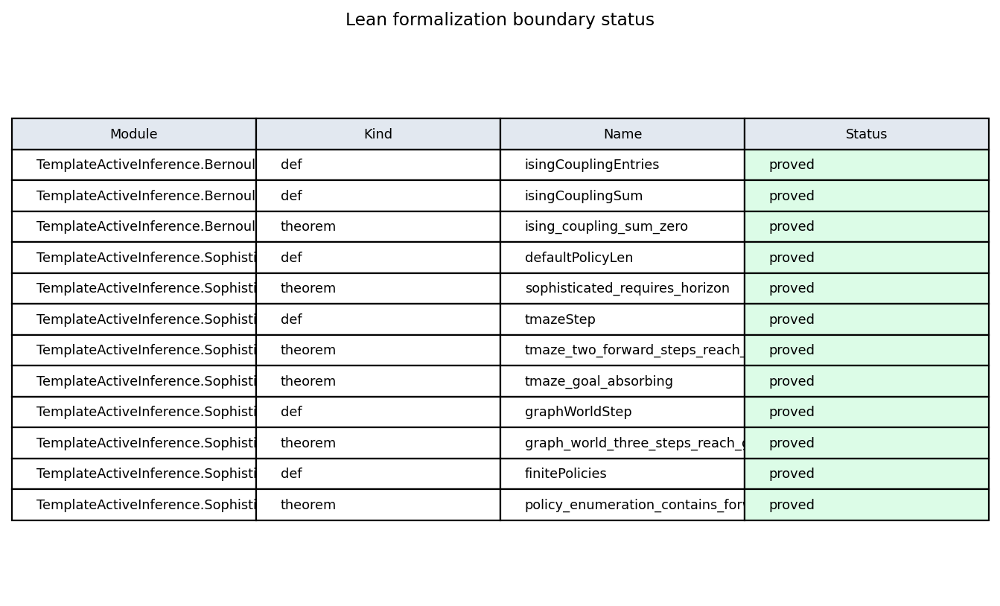

The Lean track provides minimal boundary witnesses checked by
lake build under
lean/TemplateActiveInference/. [@fig:lean_boundary_status]
summarizes proved versus deferred statements; fragments cite theorem
names without duplicating proof scripts in prose.
Horizon witnesses link back to the analytical toy ([@sec:methods_analytical]) and the pymdp planning depth ([@sec:methods_pymdp]).

Figure M2 (methods). Lean formalization boundary: module witnesses checked by lake build.
Lean module
TemplateActiveInference.SophisticatedInference declares the
planning-horizon parameter defaultPolicyLen and finite
T-maze boundary witnesses:
sophisticated_requires_horizon : defaultPolicyLen > 1,
tmaze_two_forward_steps_reach_goal, and
tmaze_goal_absorbing. These theorems formalize the small
state-transition boundary shared with the Python harness; they do
not prove that the toy policy posterior is a general model of
sophisticated inference. Axioms are audited with
#print axioms (the gate whitelists only
propext, Classical.choice,
Quot.sound); see the Lean track gate.
Build via lake build under lean/.